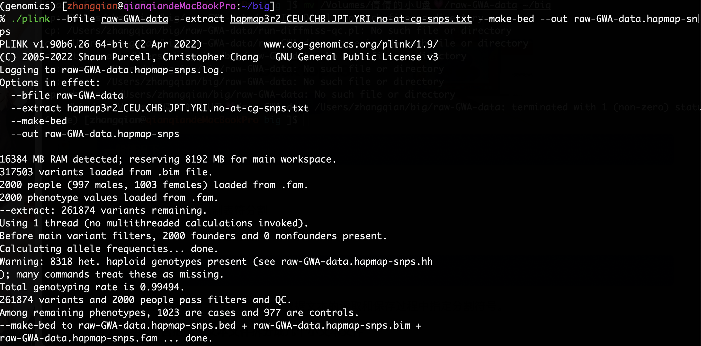

第六次作业-张倩-202218020415007
遗传病例相关分析的数据质控
将.ped .map 转为 .bed .bim .fam 格式

计算X染色体的纯合率

获取Family IDs individual IDs
识别具有较高缺失率的个体
N_MISS 表示数量 F_MISS 表示比例
第三列表示观察到的纯合基因型[O(homm)]的数量，第五列表示每个个体的非缺失基因型[N(NM)]的数量。
使用公式(N(NM)−O(Hom))/N(NM)计算观察到的每个个体杂合度率。创建一个图,其中，x轴为每个个体观察到的杂合度，y轴为每个个体缺少snp的比例。
计算不合格的序号
library(dplyr)
het=read.table("~/big/raw-GWA-data.het",h=T)
het$meanHet = (het$N.NM. - het$O.HOM.)/het$N.NM.
line1 <- mean(het$meanHet)-(2*sd(het$meanHet))
line2 <- mean(het$meanHet)+(2*sd(het$meanHet))
## calculate horizontal which matched
hetunkown <- subset(het,meanHet >= line1)
hetunkown1 <- subset(hetunkown, meanHet <= line2)
## cauculate vertica which satisfied
imiss=read.table("~/big/raw-GWA-data.imiss",h=T)
imiss$logF_MISS = log10(imiss[,6])
imisssuv <- subset(imiss, logF_MISS < -1.522879)
## intersect the two id which matched the two condition
hetfid <- hetunkown1$FID
imissfid <- imisssuv$FID
totalfid <- intersect(hetfid,imissfid)
## subset the hetset by totalfid
total <- het$FID
final <- setdiff(total,totalfid)
finaldata <- as.data.frame(final)
finaldata$final1 <- finaldata$final
write.table(finaldata,'fail-sexcheck-qc.txt',sep = '\t',col.names = F,row.names = F)
plink --file raw-GWA-data --exclude high-LD-regions.txt --range --indep-pairwise 50 5 0.2 --out raw-GWA-data
在存在LD的真实数据集中，可以通过在shell提示符“plink——file raw- gw -data——exclude high-LD-”输入来修剪数据
regions.txt——范围——indep-pairwise
50 5 0.2——out raw- gw -data '创建文件raw- gw -data.prune.in;这就节省了在分析中保存的snp列表。这也排除了在high-LD-regions.txt中列出的高LD扩展区域的snp。
plink --bfile raw-GWA-data --extract raw-GWA-data.prune.in --genome --out raw-GWA-data
确定所有患有IBD >的个体对;0.185. 该代码查看存储在原始gw数据中的单个呼叫速率。imiss并输出具有的个人的id对' fail-IBD-QC.txt '进行后续删除的最低呼叫率。
这一步是通过将研究基因型与来自四个种族人群的HapMap Phase III (HapMap3)数据合并来进行的。每个标记上的等位基因必须与相同的DNA链对齐，才能使研究数据正确合并。因为本分析并不需要所有的snp，所以比较难对齐的A→T和C→G snp可以省略。要创建一个新的BED文件，从GWA数据中排除那些在四个原始HapMap3种群的基因型数据中不具有特征的snp，输入“plink -bfile raw- gw -data -extract hapmap3r2_chs . chb . jpt . yri .no-at-cg-snp .txt -make-bed -out raw- gw -data”。的Unix提示符。
15|合并raw- gw -data。带有HapMap数据的HapMap -snps文件，并通过键入' plink——bfile raw- gw -data提取修剪后的SNP集。hapmap-snps——bmerge hapmap3r2_CEU.CHB.JPT.YRI.founders。no-at-cg-snps。床hapmap3r2_CEU.CHB.JPT.YRI.founders.no-at-cg-snps。bim hapmap3r2_CEU。CHB.JPT.YRI.founders.no-at-cg-snps。fam公司——提取raw-GWA-data.prune。in——make-bed——out raw- gw -data.hapmap3r2.pruned’。

plink --bfile raw-GWA-data --extract raw-GWA-data.prune.in --genome --out raw-GWA-data
plink --bfile raw-GWA-data.hapmap-snps --bmerge hapmap3r2_CEU.CHB.JPT.YRI.founders. no-at-cg-snps.bed hapmap3r2_CEU.CHB.JPT.YRI.founders.no-at-cg-snps.bim hapmap3r2_CEU. CHB.JPT.YRI.founders.no-at-cg-snps.fam --extract raw-GWA-data.prune.in --make-bed --out raw-GWA-data.hapmap3r2.pruneda
###实验目的：
研究设计的缺陷和基因型命名的错误有可能在遗传病例对照关联研究中引入系统性偏差，导致假阳性和假阴性关联的数量增加。为了去除这些假阳性关联，必须采取几个QC步骤来去除错误率特别高的个体或标记。从研究中删除的每一个标记都可能是一个被忽视的疾病关联，因此删除一个标记的影响可能比删除一个个体的影响更大。质控分为四个步骤(i)识别性别信息不一致的个体，(ii)识别具有孤立缺失基因型的个体或杂合率，(iii)重复或相关个体的鉴定和(iv)不同祖先个体的鉴定通过对原始数据处理，学习病例对照相关研究的质量评估和控制步骤，主要在使用PLINK工具上，评估个体检的亲缘程度。
https://pan.baidu.com/s/1upA3EIk1snNeFcqJgAMA4A
###实验环境：
macOS Monterey Version 12.6
R Version 4.2.1
R- geneplotter Version 1.74.0
PLINK Version v1.90b6.26
dplyr Version 1.0.10
conda Version 22.9.0
commands for conda usage
conda activate genomics
conda deactivate
conda install gsl==2.7.0
conda install eignsoft
原始数据:
raw-GWA-data from https://pan.baidu.com/s/1upA3EIk1snNeFcqJgAMA4A
实验过程：
基础文件转换
1 配置环境，解压压缩包
command lineL: tar xfvz raw-GWA-data.tgz
2 使用PLINK 输入 .map .ped 生成 .bed .bim .fam 文件
command line: ./plink --file raw-GWA-data --make-bed --out raw-GWA-data
识别性别信息不一致的个体
3 计算每个个体X染色体标记的平均纯合度
command line: ./plink --bfile raw-GWA-data --check-sex --out raw-GWA-data
4 生成性别与实际不符合的个体名称
command line: grep PROBLEM raw-GWA-data.sexcheck > raw-GWA-data.sexprobs
5 创建fail-sexcheck-qc.txt文件，计算每个个体缺少SNPs的数量和比例
command line: ./plink --bfile raw-GWA-data--missing --out raw-GWA-data
6 计算纯合子基因型的数量和每个个体非缺失基因型的数量
command line: plink --bfile raw-GWA-data --het --out raw-GWA-data
7 计算每个个体杂合率并绘制图片
command line: R CMD BATCH imiss-vs-het.Rscript
script under R:
library(dplyr)
het=read.table("~/big/raw-GWA-data.het",h=T)
## 计算杂合率
het$meanHet = (het$N.NM. - het$O.HOM.)/het$N.NM.
## 计算虚线代表的数值-垂直方向
line1 <- mean(het$meanHet)-(2*sd(het$meanHet))
line2 <- mean(het$meanHet)+(2*sd(het$meanHet))
## subset horizontal which matched
hetunkown <- subset(het,meanHet >= line1)
hetunkown1 <- subset(hetunkown, meanHet <= line2)
## cauculate vertica which satisfied
imiss=read.table("~/big/raw-GWA-data.imiss",h=T)
imiss$logF_MISS = log10(imiss[,6])
imisssuv <- subset(imiss, logF_MISS < -1.522879)
## intersect the two id which matched the two condition
hetfid <- hetunkown1$FID
imissfid <- imisssuv$FID
totalfid <- intersect(hetfid,imissfid)
## subset the hetset by totalfid
total <- het$FID
final <- setdiff(total,totalfid)
finaldata <- as.data.frame(final)
finaldata$final1 <- finaldata$final
## outputfile fail-sexcheck-qc.txt
write.table(finaldata,'fail-sexcheck-qc.txt',sep = '\t',col.names = F,row.names = F)
x轴为每个个体观察到的杂合度，y轴为每个个体缺少snp的比例。将本次质检不合格样品的FID和IID添加到名为' fail- imisset - QC .txt '的文件中。
计算重复或者相关的个体
8 缩减数据集减少计算复杂性
为了最大限度地减少计算复杂性，可以通过缩小数据集来减少用于创建IBS矩阵的snp数量，使没有一对snp R2的阈值为0.2。
command line: ./plink --file raw-GWA-data --exclude high-LD-regions.txt --range --indep-pairwise 50 5 0.2 --out raw-GWA-data
根据还原标记集为所有配对个体生成成对IBS
command line: ./plink --bfile raw-GWA-data --extract raw-GWA-data.prune.in --genome --out raw-GWA-data
识别IBD > 0.185的个体对，根据raw-GWA-data计算每个个体的call rate,并且将call rate最低的个体ID保存到fail-IBD-QC.txt
识别不同血统的个体
9 合并数据集
这一步是通过将研究基因型与来自四个种族人群的HapMap Phase III (HapMap3)数据合并来进行的。每个标记上的等位基因必须与相同的DNA链对齐，才能使研究数据正确合并。因为本分析并不需要所有的snp，所以比较难对齐的A→T和C→G snp可以省略。要创建一个新的BED文件，从GWA数据中排除那些在四个原始HapMap3群体的基因型数据中不具有特征的snp
command line: ./plink --bfile raw-GWA-data --extract hapmap3r2_CEU.CHB.JPT.YRI.no-at-cg-snps.txt --make-bed --out raw-GWA-data.hapmap-snps
对数据进行提取
command line: ./plink --bfile raw-GWA-data.hapmap-snps --bmerge hapmap3r2_CEU.CHB.JPT.YRI.founders. no-at-cg-snps.bed hapmap3r2_CEU.CHB.JPT.YRI.founders.no-at-cg-snps.bim hapmap3r2_CEU. CHB.JPT.YRI.founders.no-at-cg-snps.fam --extract raw-GWA-data.prune.in --make-bed --out raw-GWA-data.hapmap3r2.pruned
trouble shooting
command line: ././plink --bfile raw-GWA-data --extract hapmap3r2_CEU.CHB.JPT.YRI.no-at-cg-snps.txt --make-bed --out raw-GWA-data.hapmap-snps --flip raw-GWA-data.hapmap3r2.pruned-merge.missnp
command line: ./plink --bfile raw-GWA-data.hapmap-snps --bmerge hapmap3r2_CEU.CHB.JPT.YRI.founders. no-at-cg-snps.bed hapmap3r2_CEU.CHB.JPT.YRI.founders.no-at-cg-snps.bim hapmap3r2_CEU. CHB.JPT.YRI.founders.no-at-cg-snps.fam --extract raw-GWA-data.prune.in --make-bed --out raw-GWA-data.hapmap3r2.pruned
10 执行pca 绘制散点图
对merge后的数据集进行主成分分析并且绘制前两个主成分的散点图
command line: ./plink -bfile raw-GWA-data --pca --out pca-population
library(ggplot2)
data1 <- read.table("~/big/pca-populations.eigenvec",header = T )
bb<-ggplot(data1,aes(x=X0.00675506,y=X.0.00102713))+ geom_point()
bb <- bb + labs(x='PC1',y='PC2')
对于欧洲血统的人群，这将是CEU或TSI HapMap3个体,排除第二主成分得分小于0.072的个体，PCA图投影，所以这里选择排除PCA1>0的个体，写进fail-ancestry-QC.txt中。
整合所有QC- fail个体
command line: ./cat fail-* | sort -k1 | uniq > fail-qc-inds.txt
整合； 前几个步骤里面所有未通过质控的个体，把他们从数据集中移除plink --bfile raw-GWA-data --remove fail-qc-inds.txt --make-bed - -out clean-inds-GWA-data
识别所有数据中丢失率过高的所有marker并绘制直方图
command line: ./plink --bfile clean-inds-GWA-data --missing --out clean-inds-GWA-data
library(ggpubr)
inds <-read.table("~/big/clean-inds-GWA-data.lmiss",header = T)
par(pin=c(1,1))
p2<-ggplot(inds,aes(x=F_MISS))+geom_histogram(fill = "red",color = "black", bins = 200) +
labs(title ="All SNPs",x = "Fraction of missing data",y = "Nmuber of SNPs") + xscale("1og10",.format = T)
p2
ggsave("histogram.pdf"，p2)
检验 病人和对照的marker call rates 移除所有QC失败的markers
command line: ./plink --bfile clean-inds-GWA-data --test-missing --out clean-inds-GWA-data
command line: ./perl run-diffmiss-qc.pl clean-inds-GWA-data’ to create a file named ‘fail-diffmiss-qc.txt
command line:./plink --bfile clean-inds-GWA-data --exclude fail-diffmiss-qc.txt –-maf 0.01 --geno 0.05 --hwe 0.00001 --make-bed --out clean-GWA-data
研究设计的缺陷和基因型命名的错误有可能在遗传病例对照关联研究中引入系统性偏差，导致假阳性和假阴性关联的数量增加(术语表见框1)。许多这样的错误可以通过仔细选择病例组和对照组以及警惕的实验室实践来避免。在本系列的早期出版物1中提供了一种成功确定无偏倚病例对照组的方案，侧重于从相同基础人群中抽样的个人。在目前的方案中，我们假设已经遵循了这些关于样品确定的指导方针。然而，即使适当地进行了病例对照关联研究设计，仍然应该对数据质量进行彻底的评估，包括测试“同人群抽样”是否成功。这样的评估可以识别出低于标准的标记和样本，在进一步分析之前应将其删除，以减少假阳性和假阴性关联的数量。
本方案涉及全基因组和候选基因病例-对照关联研究中基因型数据的质量控制(QC)，并概述了我们研究小组2,3的关键研究中常规使用的方法。尽管该协议适用于从探针强度数据确定(“调用”)基因型后的基因型，但了解基因型调用是如何进行的仍然很重要。传统上，对于小规模的基因分型工作，手动检查等位基因探针强度来调用基因型，这仍然是目前进行的许多候选基因或复制研究的情况。然而，当进行全基因组关联(GWA)研究与如此多的标记，这不再是实际的。基因型调用算法(在基因型平台配套的专有软件中实现，或在外部软件如Illuminus4或Chiamo2中使用)使用数学聚类算法来分析原始强度数据——对于给定的个体和给定的标记位点——来估计基因型为aa、aa或aa的概率。一个阈值
然后应用这样的基因型，任何概率超过某一临界值的基因型都被接受，并被称为“被调用”;否则,
基因型不被接受，被称为“未命名”或“缺失”。所应用的阈值可以在很大程度上影响基因型呼叫率和基因型数据的质量。如果设置过低，信号云分离差，就可能分配错误的基因型。然而，只调用具有高度确定性的基因型可能会导致“信息缺失”，因为调用失败可能依赖于基因型。例如，罕见的纯合子基因型，平均来说，可能有较低的概率，因此引入偏差的等位基因频率仅基于所谓的基因类型5。此外，较高的调用阈值将产生大量不必要的未调用(缺失)基因型，从而减少基因组的覆盖年龄和检测关联的能力。基因型质量的最终评估是对聚类图的人工检查，在关联测试之后，无论QC强度如何，都必须对这些图进行所有用于复制的snp的检查(以防止浪费复制努力)。
全基因组关联
由于在GWA研究中检测了大量的标记位点，即使是低的错误率或偏倚也可能是有害的。如果对100万个标记进行关联测试，而低基因分型标记的比例为0.001，那么，如果不准确的调用结果检测出虚假关联，那么多达1000个标记可能会因为假阳性关联而不必要地向前进行复制。为了去除这些假阳性关联，必须采取几个QC步骤来去除错误率特别高的个体或标记。如果如建议的那样，数以千计的病例和对照已经进行了基因分型，以最大化检测关联的能力，那么去除少数个体对整体能力的影响应该很小。此外，鉴于现代GWA研究中基因分型的标记物数量众多，删除其中(希望完全)一小部分标记物不应显著降低研究的总体效力。也就是说，从研究中删除的每一个标记都可能是一个被忽视的疾病关联，因此删除一个标记的影响可能比删除一个个体的影响更大(尽管可以使用基因型突变来恢复这些标记6)。在本方案中，我们主张在对“每个标记”进行QC之前，先对“每个个体”进行QC，以最大限度地增加研究中剩余标记的数量。这种方法防止标记因基因型较差的个体子集而被错误地删除，但个体可能会因标记的基因型较差的子集而被错误地删除。另一种(保守的)方法是在删除任何个体或标记之前完成两个QC阶段，但数据可能会被不必要地删除。
每个质量控制
GWA数据的个体QC至少包括四个步骤:(i)识别性别信息不一致的个体，(ii)识别具有孤立缺失基因型的个体
或杂合率，(iii)重复或相关个体的鉴定和(iv)不同祖先个体的鉴定。
首先使用X染色体的基因型数据来检查与确定性别的不一致，从而突出电镀错误和样品混淆是有利的。因为男性只有一个X染色体的拷贝，他们不可能杂合任何标记不是在Y染色体的假常染色体区域。通常，当基因型调用算法检测到x染色体标记的雄性杂合子时，它将该基因型称为缺失。因此，在输入文件中标记为男性的女性DNA样本将会有大量的缺失数据，因为它们的杂合x染色体基因型都将被设置为缺失。并非所有的基因型调用算法都自动将杂合单倍体基因型设置为缺失;通过将x染色体标记称为对确定性别的“盲”，这种功能可以被移除。通常，人们期望男性样本的纯合度为1(尽管，由于基因分型错误，这可能会有所不同)，而女性样本的纯合度为<0.2。输入文件中标记为女性的男性DNA样本，其纯合度将高于预期，而标记为男性的女性DNA样本的杂合度将低于预期。因此，检测基因型信息和确定性别之间差异的最佳方法是计算样本中每个个体的所有x染色体snp的纯合子率，并将其与预期率进行比较。病例或对照的性别通常只在分析过程中使用这些数据时才具有相关性;例如，在进行性别分层分析或分析X染色体时。然而，当检测到一个性别信息不一致的样本时，重要的是要进行调查，以确保另一个DNA样本没有因错误的提取(因为错误的(子)表型数据可能与基因型有关)而被分型。除非可以使用现有的基因型数据正确识别样本，或者可以确认性别记录有误，否则性别信息不一致的个体应从进一步的分析中删除。
DNA样本质量存在很大的差异，这可能对基因型呼叫率和基因型准确性有实质性的影响。低DNA质量或浓度的样本通常呼叫率和基因型准确性低于平均水平。每个个体的基因型失败率和杂合率都是DNA样本质量的衡量标准。通常情况下，缺失基因型超过3-7%的个体会被移除。仔细检查缺失基因型率在整个样本集中的分布是确定最适当阈值的最佳方法。同样，应检查所有个体的平均杂合度(不包括性染色体)分布，以识别杂合子基因型比例过高或过低的个体，这可能分别指示DNA样本污染或近亲繁殖。平均杂合度(由(N−O)/N给出，其中N为特定个体的非缺失基因型的数量，O为观察到的纯合基因型的数量)在群体和SNP基因分型组之间会有所不同。由于现代高通量基因分型方法(包括基因型调用算法)的成功率和准确性的提高，通常，这些措施共同导致只有一小部分个体被排除在进一步的分析之外。
标准的基于人群的病例对照关联研究的一个基本特征是所有样本都是不相关的(即，任何一对个体之间的最大亲缘关系小于二级亲缘关系)。如果存在重复、一级或二级亲缘关系，研究中可能会引入偏差，因为家族内的基因型将被过度代表，因此样本可能不再是整个群体中等位基因频率的公平反映。在以人群为基础的病例对照研究中，在研究的设计阶段应尽一切努力限制重复和相关个体的数量(尽管有意纳入重复样本可用于抑制基因分型错误率)。为了识别重复和相关个体，根据基因型SNPs(不包括性染色体)中共有的等位基因的平均比例，为每对个体计算一个度量(州身份，IBS)。当分析中只包含独立的snp时，该方法效果最佳。为了达到这一目的，扩展连锁不平衡(LD)区域(如人类白细胞抗原(HLA)区域)从数据集中完全删除9，其余区域通常被修剪，以便在给定窗口内没有一对snp(例如，50 kb)是相关的(通常取r2 >0.2)。在计算完所有配对个体的IBS后，重复的标记为IBS为1的个体。人群的平均肠易激综合征将取决于该人群内基因型标记者的等位基因频率。有亲缘关系的个体偶然分享的IBS等位基因会比预期的多，额外分享的程度与亲缘关系的程度成正比。使用PLINK10等软件，可以通过全基因组IBS数据估计一对个体最近共享祖先的程度(通过血统识别，IBD)。我们的预期是，对于重复或同卵双胞胎，IBD = 1，对于一级亲属，IBD = 0.5，对于二级亲属，IBD = 0.25，对于三级亲属，IBD = 0.125。由于基因分型错误、LD和群体结构，这些理论值周围经常会有一些变化，典型的情况是，每对IBD值为>的个体中删除一个;0.1875，是三级亲属和二级亲属预期IBD的中间值。由于这些原因，IBD值为>0.98标识重复。
在以人群为基础的病例对照研究中，混淆可能是偏见的主要来源，它是由病例和对照亚组之间的潜在差异造成的，而不是直接被研究的亚组(通常是疾病状态)与确定变量相关。在基因研究中，感兴趣的暴露是基因型分布，混淆的一个主要来源是人群分层，在这种情况下，病例和对照组之间的基因型差异是由于不同的人群起源而产生的，而不是由于对疾病风险的任何影响11。为例如，Campbell等人对一组身高不一致的欧美人进行了关联分析，发现与LCT有显著的关联，在某些欧洲人群中，LCT是一个经历了强选择的位点;该基因变异的频率在不同群体之间有显著差异。病例和对照人群祖先匹配后，该位点的关联证据显著减少。尽管一项精心设计的人群病例对照研究试图从同一人群中提取病例和对照，但不能排除该单一人群中隐藏的细尺度遗传子结构(或无意中包含了来自另一人群的个体)。当病例组和对照组之间的人群子结构不均匀分布时，就会发生混淆。在这种情况下，关联信号将出现在一个遗传信息性的vesnp中，不是因为与疾病风险相关，而是因为由病例和对照组组成的不同的创始群体之间的等位基因频率差异。即使是小程度的人群分层也会对GWA研究产生不利影响，因为需要大样本量来检测最复杂疾病的常见变异13。因此，在仔细考虑病例匹配和种群来源控制之后，在质量控制过程中必须检查和描述潜在的分层。因此，应努力消除或减少通过消除不同血统的个体而造成的人口分层的影响。可以在关联测试期间尝试对细尺度或种群内子结构进行校正，但这超出了本协议的范围。
识别(并随后去除)具有大规模祖先差异的个体的最常用方法是主成分分析(PCA)14,15。另一种相关的替代方法，多维缩放(在PLINK中实现)是可用的，但需要构建成对的IBD矩阵，因此计算更复杂。PCA是一种多变量统计方法，用于从包含多个潜在相关变量的观察结果的数据矩阵中产生几个不相关的变量(或主成分)。对主成分进行计算，使第一主成分在单个成分中占数据中尽可能多的变化;其次是第二个组件，依此类推。在PCA祖先检测模型中，观察值是个体，潜在相关变量是标记。利用已知种群的全基因组基因型数据进行修剪，建立主成分模型;例如，为了检测大规模(大陆级)祖先，可以使用来自欧洲(CEU)、亚洲(CHB + JPT)和非洲(YRI)的HapMap基因型数据16,17。由于这三个祖先群体之间存在着大规模的遗传差异，前两个主成分足以从三个群体中单独聚类独立个体。PCA模型可以应用于GWA个体，预测这些样本的主成分得分，从而允许他们与HapMap样本在祖先方面聚类。在模型构建和预测步骤中，必须使用大约50,000个独立标记的公共集合。在分析之前，应该去掉LD过高的区域(如HLA区域)，因为这些区域会过度影响主成分模型9。PCA方法也可以用于基于细尺度结构的个体聚类，尽管可能需要更多的主成分来充分捕捉这种变化，并需要适当的参考样本。
Per-marker QC
GWA数据的单个标记QC至少包括四个步骤:(i)识别过度缺失基因型的snp， (ii)识别显著偏离Hardy-Weinberg平衡(HWE)的snp， (iii)识别病例和对照组之间缺失基因型率显著不同的snp， (iv)去除所有小等位基因频率非常低的标记(MAF)。
去除次优标记是GWA研究成功的关键，因为它们可能表现为假阳性，并降低识别与疾病风险相关的真实关联的能力。然而，用于过滤低质量标记的标准在不同的研究中有所不同。必须非常小心地只移除特征较差的标记，因为每一个被移除的标记都可能是遗漏的疾病变体。通常情况下，呼叫率低于95%的标记被从进一步的研究中移除7,18，尽管一些研究对低频标记选择了更高的呼叫率阈值(99%)(MAF <5%) 2。
大多数GWA研究排除了从HWE中显示出广泛偏差的标记，因为这可能预示着基因分型或基因型调用错误。然而，偏离HWE也可能意味着选择;因此，如果病例样本显示与疾病相关的基因座偏离HWE，那么从进一步的研究中删除这些基因座显然会适得其反。因此，在检测HWE的偏差时，只应使用对照样品。声明snp处于Hardy-Weinberg平衡的显著性阈值在不同研究中存在显著差异(文献2,20报道了p值阈值在0.001到5.7 × 10−7之间)。然而，那些研究表明
协议
已经为HWE偏差设定了非常低的阈值，这样做的条件是snp的所有基因型聚类图都显示出背离HWE的一些证据(即P <0.001)进行人工质量检查。在实践中，这意味着许多HWE p值小于0.001的snp被删除，尽管低于这一阈值的基因型snp仍在研究中。
检测并随后去除病例和对照组之间缺失基因型率有显著差异的snp是减少混淆和去除低基因型SNPs21的另一种方法。将病例和对照基因型一起调用，或使用“模糊调用”22，大大减少了这种混淆，但数据中仍可能存在基因型失败的重要差异，并表现为假阳性关联。在研究中，病例和/或对照已经从几个不同的来源，这是明智的测试主要差异呼叫率，等位基因频率和基因型之间的这些不同的组，以确保它是公平的处理合并病例或对照集作为一个同质组。
每个标记QC的最后一步是去除所有MAF非常低的snp。通常，MAF阈值为1-2%，但样本量小的研究可能需要更高的阈值。杂合子和罕见纯合子簇的小尺寸使得使用目前的基因型调用算法很难调用这些变异;在病例对照关联试验中，它们经常表现为假阳性。此外，即使被准确地调用，在这些罕见的snp上观察到的关联信号也不那么强大，因为它们仅由少数个体的基因型驱动。鉴于检测与罕见变异的关联的能力如此之低，
移除它们并不会过度影响研究。然而，即使在去除罕见变异和严格的个体和SNP QC后，基因分型错误仍然可能存在。手动检查群集图是确保基因型调用健壮性的最佳方法。因此，在选择snp进行后续基因分型之前，必须手动检查所有与疾病状态相关的snp的聚类错误。
候选基因关联
候选基因关联研究涉及的snp比GWA研究少得多，因此许多GWA研究QC过程不能在候选基因研究中进行。GWA研究方法的优点之一是，超过99%的snp遵循无关联的零分布，可用于检测混杂的证据。这在候选日期基因方法中是不可能的，因为(i)由于基因的候选性，可能很少有snp符合无关联的原假设;(ii)很少有snp是基因分型的。由于基因型snp较少，也更难获得(i) DNA质量(通过基因型失败率和杂合率)、(ii)群体祖先和(iii)研究中与他人的家族关系的准确估计。这些因素对候选基因关联的有害影响可能与在GWA场景中观察到的相同(尽管在一个精心设计的种族匹配个体的研究中，单个位点的群体分层的先验概率远低于基因组中任何位点的分层)，除非研究人员识别和删除错误个体和snp的能力大大降低。这可能是候选基因研究通常没有产生许多可重复的疾病基因关联的另一个原因(除了样本量小、遗传变异覆盖率低和候选基因选择差之外)。
我们仍然应该尝试识别和删除通话率极低的个人。然而，个体被排除的阈值取决于snp基因型的数量，通常高于进行GWA研究时使用的阈值。例如，如果一项候选基因研究包括50个snp，那么删除缺失数据超过3%的个体将导致删除缺失数据只有2个snp的个体。更合理的方法是剔除那些缺失10个或更多snp的个体(失败率为0.2)。
候选基因研究中标记物的QC与GWA研究方法更具有可比性，因为涉及的病例和对照数量相似。检查候选基因研究中包含的标记的失败率并排除那些失败率高的标记是极其重要的。当一个SNP被识别为高失败率(>5%)，一个选择是返回实验室，尝试在数据缺失的个体中对该SNP进行基因分型。考虑到候选基因研究中包含的SNP是根据它们标记邻近SNPs24的能力来选择的，由于失败率升高而排除的SNP会严重损害候选基因研究。考虑到这一点，当一个SNP基因分型在个体间没有足够的质量时(这不能通过基因分型来纠正)，建议返回到设计阶段，并为失败SNP所在的单倍型块选择另一个标记。检测对照组中HWE的偏差仍然是检验基因分型质量的一种有效方法。
box
科克伦-阿米蒂奇趋势检验分类数据分析的统计检验。它用于检验2 × k列联表(其中k为暴露类别的数量——在本例中为基因型类别)中的关联。在遗传关联研究中，因为潜在的遗传模型是未知的，这个测试的加性版本是最常用的。混杂——统计分析中的一种偏差，导致虚假或扭曲的结果，其原因是一个无关变量(混杂变量)与暴露变量(例如，给定位点的基因型)和结果变量(例如，病例对照状态)之间的相关性。
失败率-缺失基因型的比例。如果基因型调用算法不能以足够的置信度推断出基因型，则将基因型归类为缺失型。可以跨个体和/或snp计算。
假阴性——当一个真正的疾病相关的变异在一个给定的研究中与疾病无关时，就会发生这种情况。
假阳性——当一种与疾病状态没有真正关联的变异在特定研究中与疾病显著相关时，就会发生这种情况。
基因型调用算法——一种统计算法，每个标记和每个个体，将来自两个等位基因探针的强度数据转换为单个基因型进行分析。
基因型呼叫率-每个标记的基因型中不缺失数据的比例。
基因型聚类图-每个snp的强度数据的图形表示，来自于所有个体的基因分型过程中使用的两个探针，以及最后的称为基因型。一般来说，在所有个体中，探针A的强度与探针B的强度对应，给定个体的基因型用三种颜色之一表示。同一类的基因型应该聚集在一起，这些聚集在病例组和对照组之间应该一致。
一个建立人类基因组单倍型图谱的国际项目。公开可得的数据包括来自非洲、亚洲或欧洲血统的60-90个个体的4个样本集的约320万个SNP基因型(第二阶段)。HapMap第三阶段包括来自更多个体和群体的约150万个SNP基因型。
Hardy-Weinberg平衡-给定一个较小的等位基因频率q，处于Hardy-Weinberg平衡的双等位基因位点上的三种可能的基因型(aa, aa和aa)的概率为((1−q) 2,2q(1−q)， q2)。在一个大的、随机交配的、同质的种群中，这些概率应该是一代一代稳定的。
杂合子率-一个特定个体的杂合子基因型的比例。
信息缺失——当被称为缺失的基因型的概率与真实相关时，就会发生这种情况
潜在的基因型。
连锁不平衡-两个或多个位点等位基因的非随机结合。
州对身份——一对个体拥有相同等位基因的基因座的比例。由(IBS2 +
0.5 × IBS1)/(N个SNP对)，其中IBS2和IBS1分别是两个个体有两个等位基因和一个等位基因共有的位点的数量，N个SNP对是共有的、不缺失的SNP的数量。
群体子结构——存在着不同的个体群体，这些个体在等位基因频率上有细微的差异，因此基因数据可以用来将这些个体聚集到单独的群体中。
主成分分析——一种计算若干正交潜在变量的数学过程，这些变量汇总了包含许多潜在相关变量的数据矩阵。
r2 -两个标记间连锁不平衡(遗传相关)的度量。r2值为1表示两个标记完全相关，r2值为0表示两个标记完全独立。
stmerge_small.R